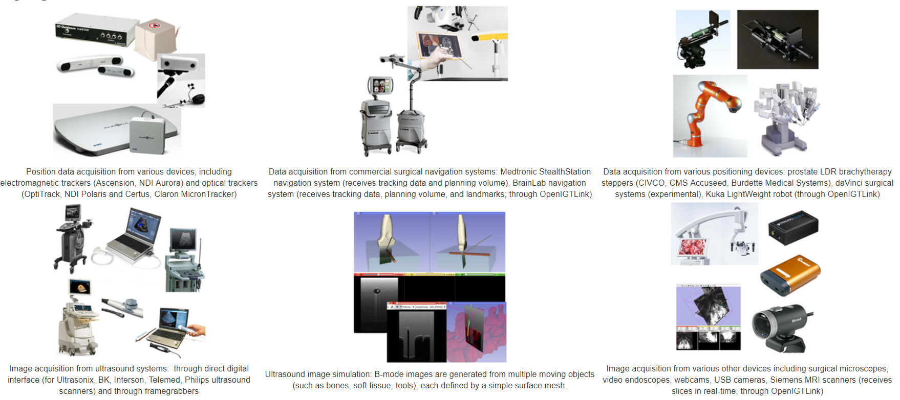
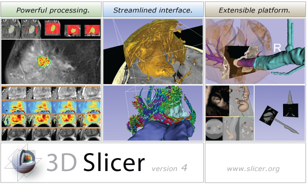

PLUS Toolkit
PLUS (Public Library for Ultrasound Imaging Research) is an OpenIGTLink compatible hardware interface for acquiring data from ultrasound machines, optical & electromagnetic position trackers and other assorted hardware.
C++, CMake, Software Engineering

3D Slicer
3D Slicer is the leading open source medical image computing toolkit.
C++, CMake, Software Engineering
SlicerIGT
SlicerIGT is a 3D Slicer extension enabling the rapid prototyping of image guided surgery applications.
C++, CMake, Python, Software EngineeringLumpNav
LumpNav is an application build on top of SlicerIGT used to provide electromagnetic navigation for breast conserving surgery.
Python, Translational ResearchPerkLab
The Laboratory for Percutaneous Surgery is a Queen's University (Kingston, ON) based research lab with focus on image guided therapy, radiotherapy and other emerging intra-operative technologies.
Research